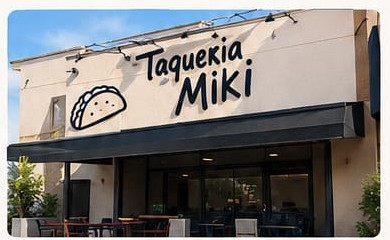

Calidad
Ingredientes frescos y seleccionados.
En Taquería Miki somos una familia apasionada por la comida mexicana. Desde nuestros inicios, hemos trabajado con mucho esfuerzo para ofrecerte tacos, tortas, gringas y más, preparados con ingredientes frescos y de la mejor calidad.
Nos encanta compartir el sabor de nuestra cocina y recibir a cada persona con una sonrisa. Queremos que cada visita sea una experiencia rica, sencilla y especial.

Ingredientes frescos y seleccionados.
Un negocio familiar con mucho corazón.
Siempre con una sonrisa para ti.